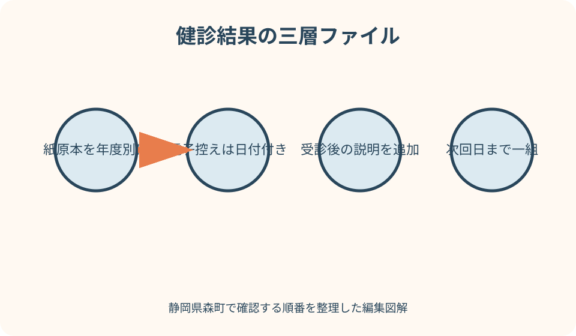
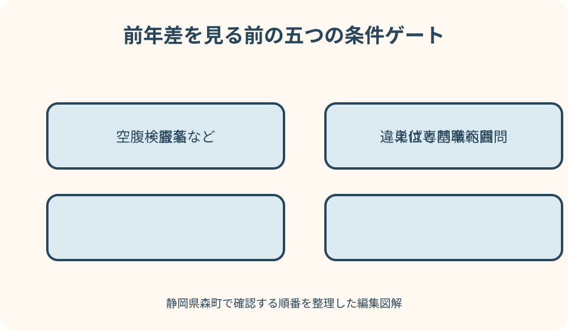

健康・医療・保険｜最終確認 2026-08-10
静岡県森町の健診結果を保管・比較する方法｜受診勧奨と年度記録の整理
健診結果は、数値を見て安心したり怖がったりするための一枚ではなく、次の受診と翌年の健診へつなぐ記録です。静岡県森町では、年齢、加入保険、勤務先での受診機会によって健診の種類が変わります。結果票を受診日順に保管し、受診勧奨、精密検査の結果、服薬変更を同じ年度の組として残すと、医師や保健師へ経過を正確に伝えられます。

編集イラスト最初に結論：結果票と次の行動を一組で残す
健診結果が届いたら、封筒へ戻して積み上げる前に、受診日、健診名、実施機関、判定、次に必要な行動を確認します。保管の単位は結果を受け取った日ではなく、健診を受けた日です。
結果票に受診勧奨があれば、医療機関の予約日と受診先を記録します。受診後は診療明細や医師から受けた説明の要点を同じ年度のフォルダーへ入れ、健診で指摘された後の経過が分かるようにします。
前年との差は、数字の大小だけで評価しません。検査方法、単位、基準範囲、空腹か食後か、服薬中かなどの条件が違えば、単純な増減から意味を決められないためです。
胸痛、強い息苦しさ、意識の変化など急な症状がある場合は、記録整理より救急要請や医療機関への連絡を優先します。健診結果は、現在の緊急性を判定する代わりにはなりません。
森町で受ける健診の種類を記録する
森町の2026年度健康診査には、基本健康診査、国保特定健診、後期高齢者健康診査、各種がん検診などがあります。同じ日に受けても、制度上は異なる検査が一冊の結果へ載ることがあります。
39歳から74歳までの森町国保加入者は国保特定健診、受診日に75歳以上の人は後期高齢者健康診査など、年齢と加入保険で入口が変わります。結果票の表紙に健診名をそのまま書き写します。
勤務先で受診機会がある人は職場等の健診を受け、森町国保加入者には結果提供への協力が案内されています。町の健診を受けなかった年も、勤務先結果を同じ個人記録へ加えます。
がん検診は加入保険にかかわらず森町で受診できる案内がありますが、特定健診とは目的も判定も異なります。血液検査の結果とがん検診結果を一つの『異常なし』へまとめないでください。
受け取った日に確認する五項目
第一に、氏名、生年月日、受診日が本人のものかを確認します。家族分をまとめて郵便物から出す家庭では、似た封筒を取り違えないよう、本人ごとに机の場所を分けます。
第二に、総合判定と項目別判定を読みます。総合欄だけでなく、医師のコメント、再検査、精密検査、治療継続などの指示が別ページにないかを見ます。
第三に、医療機関へ持参する用紙や紹介状が同封されていないか確かめます。提出用紙はスキャン後も原本を保ち、予約時に原本が必要かを医療機関へ尋ねます。
第四に結果の問い合わせ先、第五に受診期限や推奨時期を確認します。期限が明記されていなくても、受診勧奨を見つけたら先延ばしせず、予約先へ相談してください。
紙の結果票を年度別に保管する
A4の個別フォルダーを一人一年度につき一枚用意し、表に『2026年度・受診日・健診機関』と書きます。結果通知日ではなく受診日を使うと、翌年との並びが崩れません。
フォルダーの先頭へ結果票、次に受診勧奨の用紙、医療機関の説明、薬の変更記録、特定保健指導の計画という順で入れます。領収書は税務保管と混ざるなら写しを入れます。
ホチキスを外してスキャンした場合も、原本のページ順を戻します。画像検査の報告書や紹介状など再発行が難しい資料は、穴開けをせず透明ポケットで保護します。
個人が健診結果を保存する一律の年数を、町の案内だけから決めることはできません。過去の変化を伝える価値があるため、容量が許す限り年度記録を連続して残す方法が実用的です。
電子データは検索できる名前にする
電子ファイル名は『2026-07-21_森町国保特定健診_本人氏名_結果.pdf』のように、日付、健診名、本人、資料種別の順に統一します。『健診最新.pdf』は翌年に意味が変わるため避けます。
スマートフォンで撮る場合は、全ページ、四隅、文字の焦点を確認します。折り目の影で判定欄が欠けていないか、個人情報を隠す編集で検査名まで消していないかを見直します。
保存先は、端末だけでなくアクセス制限のあるバックアップを一つ用意します。家族共用の写真アプリへ自動同期すると、意図しない人へ結果が見えることがあります。
PDFへパスワードを付けても、解除方法を本人だけが知っていると緊急時に使えません。共有相手、保管場所、開く方法を別紙に残し、医療情報そのものを公開メモへ書かないようにします。
マイナポータルを補助記録として使う
マイナポータルでは、保険者や受診した保険医療機関から登録された健診結果を確認できます。紙を紛失したときや加入保険が変わった後に、受診歴をたどる補助手段になります。
マイナポータルの案内では、過去5年以内に登録・更新された健診結果が確認対象です。ただし、特定健診は2020年度以前、事業者健診は2023年度以前など、表示されない年代があります。
結果が表示されないことは、健診を受けていない証明ではありません。保険者や医療機関の登録時期によって反映が遅れることがあるため、紙の結果票と照合します。
マイナポータルに載る項目と、健診機関から届く説明文・画像・紹介状は一致しない場合があります。電子表示だけを唯一の記録にせず、原本と受診後の資料も保管してください。

前年比較の前に条件をそろえる
比較表には、検査項目名、測定値、単位、結果票に印刷された基準範囲、受診日をそのまま転記します。単位を省くと、同じ名称でも別の尺度を誤って並べる原因になります。
採血が空腹時か食後か、受診時刻、服薬の有無も分かる範囲で書きます。条件が不明なら空欄にし、推測で『空腹時』と埋めないことが重要です。
別の健診機関へ変わった年は、検査法や基準範囲が変わる可能性があります。前年差を色付けする前に、結果票の注記と単位が同じかを確認します。
体重や血圧が前年より動いても、それだけで改善・悪化を断定しません。体調、治療、測定条件を含め、気になる変化を医師や保健師へ説明する材料として使います。
数値を自己診断へ変えない
基準範囲は、結果を読むための重要な情報ですが、範囲内なら病気がなく、範囲外なら病名が確定するという境界ではありません。医学的な判断には診察や追加検査が関係します。
厚生労働省も、臨床検査は基準値と測定値の比較だけで判断するものではなく、医師の臨床所見と併せて評価すると説明しています。検索した早見表で薬の要否を決めないでください。
前年差を百分率で自動表示する表は便利ですが、変化が小さくても単位や検査法の差を大きく見せることがあります。元の結果票へ戻れるよう、転記値の横に資料名を記します。
家族の数値との比較も診断には使えません。年齢、性別、治療歴、検査条件が異なるため、本人の経年記録として専門職へ見せることに意味があります。
受診勧奨を見落とさない
結果票に再検査、精密検査、医療機関受診、治療継続などの指示があれば、その文言を比較表の最上段へ転記します。数値のグラフより先に、次の行動を見えるようにします。
健康診査の実施者は、結果通知だけでなく、必要な人へ再検査、精密検査、治療のための受診勧奨や保健指導を行うことが国の指針で示されています。
受診勧奨があるのに翌年の健診まで様子を見ると、健診の目的を果たせません。どの診療科か分からない場合は、結果を発行した健診機関やかかりつけ医へ相談します。
予約時には『健診でこの項目の受診勧奨を受けた』と伝えます。結果票、紹介状、服薬一覧を持参し、受診後は検査の追加、経過観察、治療など医師の説明を記録します。
精密検査後の記録まで閉じない
精密検査を受けたら、受診日、医療機関、診療科、持参した結果票、次回予定を残します。診断名を家族が聞き書きする場合は、本人が理解した言葉と医師の書類を区別します。
『異常なし』と説明された場合も、今回の精密検査で何を確認したか、今後の健診でよいのか、再診時期があるのかを尋ねます。一言だけでは翌年に経過を説明しにくくなります。
経過観察なら、次の検査月をカレンダーへ入れます。健診の翌年日程と医療機関の再診は別の予定であり、どちらかが自動的に取り消されるわけではありません。
薬が始まった、量が変わった、治療が終了した場合は日付を記録します。健診値と薬の関係を本人が断定せず、次回受診で医師へ確認できる時系列を作ります。

がん検診結果は別の索引を付ける
胃、大腸、肺、乳、子宮頸部などのがん検診は、検査方法と精密検査の流れがそれぞれ異なります。『がん検診』という一行へまとめず、部位と受診日を分けます。
要精密検査の通知があれば、自覚症状の有無だけで受診を見送らないでください。精密検査で確認するまでは、検診結果だけからがんの有無を確定できません。
異常なしという結果も、将来にわたり病気がない保証ではありません。次回受診時期を結果票の案内で確認し、症状があるときは検診周期を待たず医療機関へ相談します。
同じ年度に複数の検診を受けた場合、精密検査が完了した項目だけに完了日を記します。別の部位の受診勧奨まで済んだことにしないよう、チェック欄を分けます。
特定保健指導の記録を重ねる
特定健診後に特定保健指導の案内が届いたら、健診結果と同じ年度の記録へ入れます。動機付け支援か積極的支援か、初回面接日、行動目標、評価日を記します。
行動目標は『運動する』ではなく、実際に決めた回数や場面をそのまま残します。翌年の数値だけで成否を決めず、何が続いたかを保健師や管理栄養士へ伝えます。
医療機関への受診勧奨と特定保健指導が同時にある場合、支援への参加で受診を代替しません。二つの予定を別の行に書き、必要なら専門職同士の連携を相談します。
途中で保険が変わった場合は、森町国保と現在の保険者へ実施状況を伝えます。結果票と行動計画は本人の控えとして保管し、新しい相談先へ持参できるようにします。
勤務先健診の結果を扱う注意
勤務先健診の結果には、健康管理に必要な情報と、本人が慎重に扱いたい医療情報が含まれます。会社の共有フォルダーや業務メールへ個人の控えを置かないでください。
事業者には法令に基づく健診記録の保存義務がありますが、それは本人が自分の控えを持たなくてよいという意味ではありません。退職後に参照できるよう、受け取った結果を個人で保管します。
森町国保加入者が職場健診を受けた場合、町は特定健診相当の結果提供への協力を案内しています。提出する範囲、質問票、方法は森町の担当へ確認します。
上司や同僚へ伝える情報は、就業上必要な範囲に限ります。詳しい診断内容や家族歴の共有が必要か迷うときは、産業医、保健師、勤務先の健康管理担当へ相談します。
結果を紛失したときの探し方
最初にマイナポータルの健診情報を確認し、受診日と実施機関の手掛かりを得ます。表示がなくても未受診とは限らないため、次に健診機関や保険者へ照会します。
問い合わせ時は、氏名、生年月日、受診したおおよその時期、会場、当時の加入保険を準備します。再発行の可否、本人確認、手数料、受取方法は機関ごとに異なります。
森町の集団健診なら健康こども課、森町国保特定健診の制度確認なら国保年金係、医療機関の個別健診なら受診先というように、検査を実施・案内した場所からたどります。
再発行できない古い結果は、通院記録、お薬手帳、次回健診結果から分かる範囲を時系列へ置きます。記憶だけの数値は確定値として表へ入れず、『詳細不明』と記します。
家族へ共有する範囲を決める
家族共有は、本人の同意を前提に、受診勧奨の有無、予約日、移動支援など必要な範囲から始めます。すべての検査値を家族全員へ配る必要はありません。
高齢の家族を支える場合は、結果票を保管する場所、かかりつけ医、薬局、緊急連絡先を一枚の索引へまとめます。診断名を推測して書き加えないでください。
家族が代理で医療機関へ問い合わせても、本人同意や本人確認が必要になることがあります。同席、委任、電話での回答範囲を予約時に確認します。
共有データをメッセージアプリで送る場合は、宛先と保存期間を確認します。不要になった画像は端末とクラウド双方から削除し、原本の保管場所は別に残します。
転居・転職・かかりつけ医変更への備え
森町へ転入した、町外へ転出した、勤務先が変わった場合でも、過去の健診結果は本人の時系列として続けます。自治体名や保険者別に分断せず、受診日順へ並べます。
新しいかかりつけ医へは、直近の結果だけでなく、受診勧奨が出た年と精密検査の記録を持参します。全年度を渡す前に、診療に必要な範囲を受付へ確認できます。
マイナンバーカードを使う医療情報共有には本人の同意が関係し、すべての紙資料が自動共有されるわけではありません。紹介状や画像報告書は自分でも保管します。
転職直後に健診が重なる場合は、前の勤務先、新しい勤務先、加入保険の案内を比較します。重複受診の可否や提出先を各担当へ尋ね、自己判断で必要な健診を省かないでください。
健診記録を続ける良い点
良い点は、単年の数値では見えない変化を医師や保健師へ示せることです。受診機関が変わっても、元の結果票があれば検査条件を確かめながら経過を説明できます。
受診勧奨から精密検査までを一組にすると、『受けたか分からない』という家族の不安を減らせます。次回予定がある場合も、抜けた時点を見つけやすくなります。
森町の健診と勤務先健診を同じ索引へ載せれば、同じ年に何を受けたかを把握できます。がん検診の部位別履歴も分ければ、次年度の申込みに役立ちます。
紙と電子の二つを持つことで、停電や端末故障、原本紛失の一方に備えられます。どちらが最新版か迷わないよう、電子名と紙の表紙を同じ表記にします。
森町の情報提供に注文したい点
注文したい点は、森町の2026年度健診案内が対象、費用、申込み、会場を詳しく示す一方、結果が届いた後の保存と相談手順をまとめた案内が見つけにくいことです。
健診種別ごとに、結果の発送時期、問い合わせ先、受診勧奨を受けた際の持参物が一覧になれば、集団健診と個別健診の違いを理解しやすくなります。
勤務先健診や人間ドック結果を森町国保へ提供する際も、必要項目、提出形式、原本返却、個人情報の扱いを申込みページからたどれると安心です。
マイナポータルへの反映時期や表示されない場合の相談先も、町の特定健診ページに一文あると、紙を紛失した人が『データがない』と誤解せずに済みます。
紙や端末が使えない場合の代案・結論
スキャナーがなければ、結果票の表紙と受診勧奨ページだけを鮮明に撮り、残りは紙で保管する方法があります。完全な電子化を目標にして整理を止めないことが大切です。
スマートフォンを使えない人は、年度別封筒と一枚の索引で十分です。索引には受診日、健診名、判定、受診先、次回日だけを書き、詳しい数値は原本へ戻ります。
家族と共有できない場合は、本人が医療機関へ結果一式を持参します。町の健康相談や保健指導を利用できるか、当年度の案内と担当窓口へ確認してください。
結論として、受診日順の原本、検索できる電子控え、受診後の記録という三層を作ります。比較は条件をそろえた上で専門職への質問へ変え、自己診断の材料にしません。
大石の視点：一枚の数値より暮らしの時系列
大石の視点では、健診結果の価値は、赤字の項目数ではなく、その後に何をしたかまでつながっていることにあります。受診した日、説明を聞いた日、次回予定を一本の線にします。
森町北部から医療機関へ通う家族では、受診そのものに半日かかることがあります。予約日だけでなく送迎者、帰路、薬局、次回の交通手段を記録すると中断を防げます。
数値を家族会議の評価表にすると、本人は結果を隠したくなります。共有すべきなのは責任追及ではなく、受診日を忘れない、原本を探せる、送迎を分担するという具体策です。
年度フォルダーが一冊できれば、翌年はそこへ足すだけです。完璧な健康管理帳を作るより、封筒を開けた日に四項目だけ索引へ書く習慣の方が長く残ります。
二つの固有図解で保管手順を確認する
一つ目の図解は『健診結果の三層ファイル』です。原本の年度フォルダー、電子控え、受診後の記録を重ね、どの資料からでも受診日を起点に同じ案件へ戻れるようにします。
二つ目は『前年差を見る前の条件ゲート』です。検査名、単位、基準範囲、採血条件、実施機関を順番に確認し、一つでも違えば単純比較せず相談メモへ送ります。
図には病名や診断基準を載せません。結果票に印刷された判定と受診勧奨を中心にし、読者が図だけで治療の要否を決めない設計にします。
印刷した図の余白へ、本人の保管場所、最終更新日、次回受診日を手書きできます。検査値そのものは記さず、紛失時に資料へたどり着く索引として使います。
一次情報の読み分け
森町の2026年度健康診査ページと保存版PDFは、当年度の対象、申込み、費用、実施場所を確認する資料です。個別の結果判定は、健診機関から届いた本人の結果票を使います。
森町国保の特定健診ページは、40歳から74歳までの対象と、勤務先・人間ドック結果の提供を確かめる入口です。がん検診の判定方法を説明するページではありません。
厚生労働省の健康診査指針は、速やかな結果通知、必要な再検査・精密検査・治療の受診勧奨、継続した健診情報の重要性を確認する全国共通資料です。
マイナポータルのFAQは表示対象の年代と登録条件を確かめる資料です。表示されたデータだけで完全な生涯記録になるとは考えず、紙と医療機関資料を補い合わせます。
まとめ：保管・比較・受診の三段階
保管では、結果票を受診日順の年度フォルダーへ入れ、同じ名前で電子控えを作ります。受診勧奨用紙と精密検査後の資料も、別々に散らさず同じ案件へ結びます。
比較では、項目名、単位、基準範囲、採血条件、実施機関を確かめます。前年差は診断ではなく、医師や保健師へ尋ねる変化を見つけるために使います。
受診では、結果票、紹介状、服薬一覧を持ち、医師の説明と次回日を記録します。異常なし、経過観察、治療開始のいずれでも、何を確認したかが翌年に分かる形を残します。
本稿は2026年8月10日時点の一次情報に基づき、個別の検査値を評価するものではありません。森町の最新日程は町公式、本人の判定は結果票、医学的な判断は医療機関で確認してください。
公式情報・確認先
掲載内容は次の一次情報を基礎に整理しました。営業、料金、催し、交通は変わるため、出発前または手続き前にリンク先で最新情報を確認してください。
- 令和8年度 森町健康診査（総合検診）（静岡県森町、2026-08-10確認）
- 令和8年度森町健康診査のご案内（静岡県森町、2026-08-10確認）
- 国民健康保険特定健診について（静岡県森町、2026-08-10確認）
- 森町 特定健康診査・がん検診のご案内（公立森町病院、2026-08-10確認）
- 国民健康保険特定健康診査・特定保健指導（静岡県、2026-08-10確認）
- 健康増進事業実施者に対する健康診査の実施等に関する指針（厚生労働省、2026-08-10確認）
- 標準的な健診・保健指導プログラム（令和6年度版）（厚生労働省、2026-08-10確認）
- いつ受診した健診結果から見ることができますか（マイナポータル、2026-08-10確認）